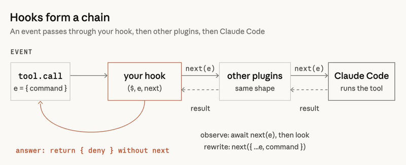
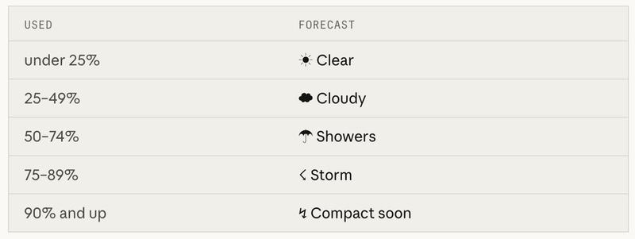
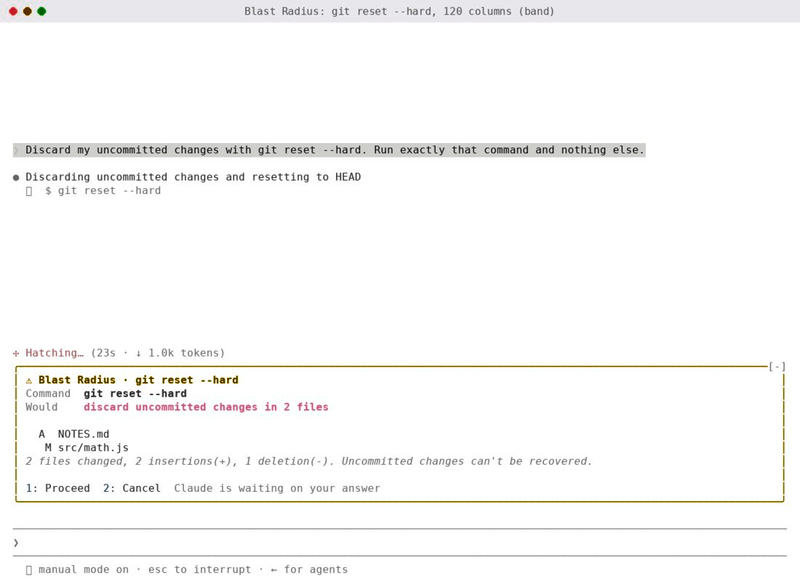

Feature 11 · ARTICLE · 2026 10
Getting started with Claude Code Mods
Mods arrived in Claude Code a few weeks ago. They are small JavaScript or TypeScript files that run inside your session, react to events, change how Claude Code behaves, and draw your own interfaces in the terminal and desktop apps. You don’t need to learn their API. Describe the mod to Claude, approve the files, say yes to hot reloading, and the mod appears when the turn ends. They are plugins, so you publish and install them like plugins. They aren’t sandboxed, so read the source before you install one.
How mods work

A mod is a set of hooks bundled with a plugin. Each hook sees every event in the session: tool calls, submitted prompts, turns and sessions starting and ending, slash commands, and every rendering of any part of the UI. Hooks chain like middleware. An event passes through your hook, then through other plugins, and only then reaches Claude Code and its default action.
A hook can do one of three things with an event:
Observe: let it continue and watch the outcome, such as logging every file change.
Rewrite: change it for the hooks after yours, such as adding text to a prompt.
Answer: handle it itself so the default never runs, such as denying a tool call.
These words help when you ask Claude for a mod. “Refuse this kind of command” is an answer. “Take a snapshot after every turn” is an observation.
A settings hook is a shell command that runs on each event. A mod loads once, keeps its own state and UI, and can call back into Claude Code: open a pane, spawn a process, or register a slash command or a tool the model can call. We build some of Claude Code’s own features this way, including AGENTS.md support and the /diff pane; the code and tests are in the mods/ directory of anthropics/claude-code.
Your first mod: Token Weather

Token Weather puts one line above the prompt after each turn: a weather icon and the share of the context window in use, the tokens used out of the window, a small chart of recent turns, and how much the last turn added. The bands run from ☀ Clear under 25% to ↯ Compact soon at 90% and up.
To build it, start claude and describe exactly that: the name, where it shows, the five bands with their colors, the “134.4k / 200k” count, a chart of the last 12 turns drawn with ▁▂▃▄▅▆▇█, and the “▲ +98.3k last turn” figure, updated every turn. The prompt never mentions events, state or the API. Claude Code ships with a guide for writing mods, so it already knows where to keep state so a reload doesn’t wipe it, how to check the plugin with claude plugin validate, and which events to hook.
After that, you change it by asking. “Make Storm start at 70%” or “add the dollar cost at the end” updates the band in front of you, with no restart. For me, that quick loop is most of what makes mods fun.
Three practical notes:
If a mod’s visuals vanish, run
claude --debugand look for a hook that returned a tree that does not validate.The API may change between releases. Claude Code writes the type declarations for your build into the mod’s
.claude-plugin/types/folder; treat those as the reference.A mod built this way lasts one session, and its folder is cleaned up later. To keep it, copy it out of
~/.claude/dev-mods/<session-id>/and install it as a plugin.
Publishing and installing
To publish, put the mod in a GitHub repo with a marketplace file and push updates as usual. To install:
/plugin marketplace add your-org/my-mods/plugin install token-weather@my-mods, then pick a scope/reload-pluginsif it doesn’t start on its own
You can also submit it to the Claude directory at claude.ai/directory/manage, so people find it without your repo link.
Mods run on your machine with your permissions. They can read your files and secrets, start processes, make network requests and approve tool calls. Their authors write them, not Anthropic. Read the source, install only from people you trust, and run claude plugin validate on the folder to see what it hooks and calls.
Two harder mods

Blast Radius catches Bash calls from Claude that may be dangerous (rm -rf, git reset --hard, git clean, force push, database migrations) and works out what they would do from each tool’s dry run, such as git status --porcelain or git clean -n. A pane offers Proceed or Cancel: 1 runs the command, 2 sends Claude a refusal with the reason, Esc cancels. On a wide terminal the pane docks beside the transcript; otherwise the report sits above the prompt. Only one mod can hold that band at a time, so if another holds it the buttons may not appear and the command is refused after 10 minutes. It is a safety net, not a firewall: it reads the command text, so $(…), aliases, and scripts that call rm get past it. For a hard block, use permission rules.
Replay Theater watches every Edit and Write during a turn and records what changed. When the turn ends, a message above the prompt offers a replay. Type /replay (or ctrl+x, Tab, r) for a pane of per-edit diffs, a list of steps, and Prev, Next and Close. It never blocks or alters an edit; it only watches. Each turn gets its own replay, subagent edits included, so the turn can be walked through again, step by step, after it has already happened. In fullscreen the pane docks on the right; at 80 columns it sits inline above the prompt.
The code for all three mods is in anthropics/claude-code-playground, under claude-code/mods.
Community mods I love
Stack viewer by Daniel Avila:
/stacklists the skills, subagents, commands, hooks, MCP servers and plugins in your session.cc-stretch by pro-vi: Claude answers briefly, and any linked phrase you click expands to full length, a modern expression of old hypertext concepts.
Mindful Claude by halluton: while Claude works, an animation above the prompt helps you take a deep breath.
RemCTL by Federico Viticci: shows today’s Apple Reminders above the prompt.
What will you mod?
Each demo began from one question. How much context do I have? What command is about to run? What did Claude just change? Your questions will likely differ, and so will your mods. Tell Claude what you want to see and when, and leave the implementation to Claude. Once you have one you use daily, post a video of it in action, or add it to a marketplace and share the link.